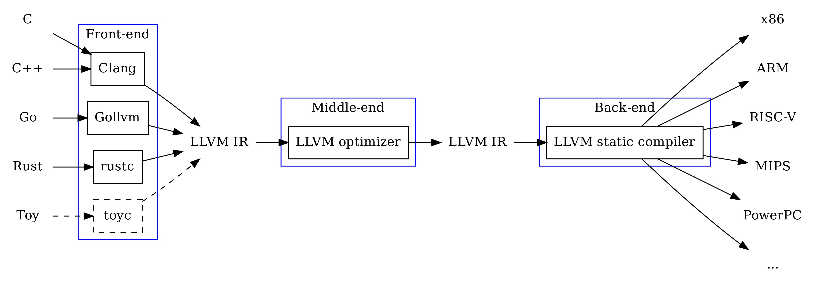

Yanyan Jiang
Compilers
Semantics
A program for translating programs to lower-level programs

Expression compiler ecc.py
Example (foo.e):
foo: (x + 1) * (x + 1)
Static Single Assignments (SSA)
-emit-llvm -c -SRewriting rules and iterate until fixed point
Create an optimized compiler
Try it
(x + 1) * (x + 1) - (x - 1) * (x - 1)x * 9Can we “know better” about an expression's value?
?sum: product
| sum "+" product -> add
?product: atom
| product "*" atom -> mul
?atom: NUMBER -> num
| "(" sum ")"
Semantics: the “value” of expressions
eval('3 + 4 * 5') → 23 (expressions are trees!)eval('x + y * z') → ?
eval('x + y * z') under $\sigma$eval('1 + 2 * 3') → 4Programs are simply state transformers!
What is
$$ \llbracket \textbf{while}\ \textbf{true}\ \textbf{do}\ \textbf{skip} \rrbracket_\sigma? $$
$$ \llbracket \textbf{while}\ \textbf{true}\ \textbf{do}\ \textbf{skip} \rrbracket_\sigma = \llbracket \textbf{while}\ \textbf{true}\ \textbf{do}\ \textbf{skip} \rrbracket_\sigma? $$
Loop semantics should be the least fixed point satisfying $$\llbracket \textbf{while}\ b\ {\bf do}\ c \rrbracket_\sigma = \llbracket \textbf{if}\ b\ \textbf{then}\ (c; \textbf{while}\ b\ {\bf do}\ c)\ \textbf{else skip} \rrbracket_\sigma $$
We can define a small step of evaluation
$$ \frac{ } { \quad \llbracket {\bf while}\ b\ {\bf do}\ c \rrbracket_\sigma = \llbracket \textbf{if}\ b\ \textbf{then}\ (c; {\bf while}\ b\ {\bf do}\ c)\ \textbf{else skip} \rrbracket_\sigma \quad } $$
$$ \frac{ \qquad \llbracket b \rrbracket_\sigma = {\rm true} \qquad \llbracket c; {\bf while}\ b\ {\bf do}\ c \rrbracket_\sigma = \sigma' \quad } { \quad \llbracket {\bf while}\ b\ {\bf do}\ c \rrbracket_\sigma = \sigma' \quad } $$
$$ \frac{ \quad \llbracket b \rrbracket_\sigma = {\rm false} \quad } { \quad \llbracket {\bf while}\ b\ {\bf do}\ c \rrbracket_\sigma = \sigma \quad } $$
Can also add a
Semantics enables studying programs as
Need a non-recursive implementation of the Tower of Hanoi?
void hanoi(int n, char from, char to, char via) {
if (n == 1) printf("%c -> %c\n", from, to);
else {
hanoi(n - 1, from, via, to);
hanoi( 1, from, to, via);
hanoi(n - 1, via, to, from);
}
}